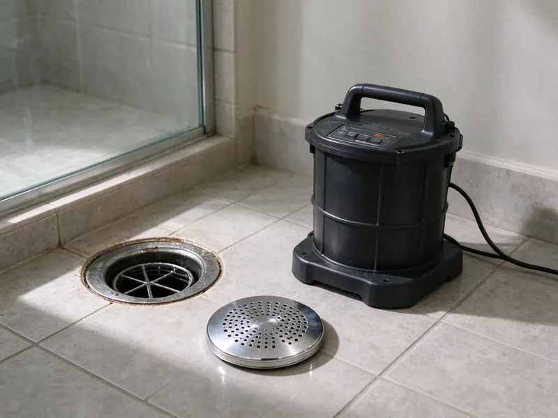

Drain Unblocking in Kingston, RI
Stubborn blockage in Kingston, RI? JPN Plumbing brings the closet auger, the drum machine and a sewer cable on one truck.
- Prompt Arrival
- Local Licensed Plumbers
- Backed Guarantee
- Fast Unblocking

Toilet Backing Up? We Clear It Today in Kingston, RI
Our techs clear the blockage and test the fixture before leaving.
Drain Unblocking in Kingston, RI
JPN Plumbing handles blocked drains in homes and businesses across Kingston, RI. Each fixture has its own usual culprit, and we carry the right cable and head for it. Expect about an hour.
Our expertise includes:
- Cables and heads for small to large drains
- Sewer Camera Inspection After Tough Blockages
- Root Cutting in Main Sewer Lines

Additional Drain Services Services in Kingston, RI
From stubborn kitchen clogs to main sewer backups, our drain services in Kingston, RI restore full flow fast and keep it that way.


Customers
Why Choose JPN Plumbing for Drain Unblocking in Kingston, RI?
We do not pour chemicals into a blocked drain. Chemical openers often fail and leave corrosive water behind, so we use mechanical tools. Tell us if you tried one.
- Cause Explained, You hear what caused the blockage so you can avoid a repeat.
- Local Causes Known, Roots in older Rhode Island laterals and scale from hard water are problems we handle every week.
- Fixes That Hold, We clear the full pipe opening, not just a hole, so drains stay open.
Citywide Coverage
Anywhere in Kingston, a blocked drain tech is one call away. Homes, apartments, restaurants and offices all get the same tools and the same approach, which starts with finding the blockage and ends with a flow test. No property is too small.
Experienced Team
Our plumbers know the drain systems found across Rhode Island. Cast iron in older homes, early PVC and ABS in mid-century tracts, and a mix of everything in remodeled houses all take a slightly different touch with a cable. They adjust as they go.
Safety-First Approach
Unblocking work is done safely and to Rhode Island code. Correct cable size, fixture protection and a leak check are part of every visit. Fixtures stay intact.
Trusted Certified Kingston Plumbing Services Professionals
At JPN Plumbing, we are proud to offer certified plumbing services throughout Kingston, RI. Credentials matter in this trade. Every repair, install and maintenance visit follows strict safety and quality rules, and the plumbers doing the work carry recognized industry credentials.
Call Us Now PHCC Plumbing Contractor Recognition
PHCC Plumbing Contractor Recognition Better Business Bureau (BBB) Accreditation
Better Business Bureau (BBB) Accreditation Angi Certified Pro
Angi Certified Pro ISO 9001 Quality Management Certification
ISO 9001 Quality Management CertificationEvery Kind of Unblocking in Kingston, RI
Kitchen Sink Unblocking in Kingston
Grease is the kitchen sink's worst enemy. It goes down warm, cools in the pipe behind the wall and catches food scraps and coffee grounds until the line seals shut and both basins fill with gray water. Access starts at the trap. A drum machine clears the wall line, and hot water flushes the residue on.

Main Line Blockages in Kingston
Several drains blocked at once points to the main. Finding the cleanout comes first, then a heavy cable with a cutter runs toward the street. Expect roots or wipes. Once flow returns, a camera inspection can show what is going on inside the pipe.
Unblocking Toilets With Objects Stuck in Kingston
Paper, wipes, pads and toys all block toilets. The sleeved auger handles most, though a hard object usually means lifting the toilet. We reset on a fresh wax ring. We test several flushes before leaving. Narrow trapways clog more often.
Business Drain Unblocking in Kingston
Public restrooms take a beating. Restroom fixtures collect towels and products, and floor drains collect grease and mop grit. We work fast and quietly. Problem lines can get scheduled cleaning with written records.
Grease-Blocked Kitchen Lines in Kingston
Standing water in both basins usually means grease. Even homes on soft water get grease and soap building up in the kitchen branch over the years, especially when the dishwasher and disposal both tie into the same line. We check the disposal outlet too. Wiping greasy pans with a paper towel before washing helps more than anything you can pour in.
Bathroom Sink Unblocking in Kingston, RI
Hair, toothpaste and soap scum. Combined with minerals, they paste up the stopper and trap, which we clean first. Deeper clogs get a small cable. Corroded traps can be replaced on the spot.
After-Hours Unblocking in Kingston, RI
Backups do not keep office hours. A full house, one bathroom or a basement drain backing up means our on-call tech comes tonight. First we stop the overflow. Then we clear the line.

Professional Unblocking Versus DIY in Kingston, RI
Rental augers and store chemicals look cheaper. They often fail on a full blockage, push the clog deeper into the line, or leave a sink full of caustic water that makes the eventual plumber's job harder and more dangerous. We quote a flat price. It comes with a written guarantee.
Blocked Drain Techs Near You in Kingston, RI
A blocked drain needs a plumber who can get there quickly. Trucks carry augers, drum machines, sewer cables and a camera, so most calls end on visit one. Same day is common.
Local experience counts on blocked drains. Our techs have cleared enough lines in this area to know which neighborhoods have old clay laterals full of roots and which ones have newer pipe that clogs mostly from wipes. We pack the truck for it. Fewer return trips.
JPN Plumbing at a Glance
- Licensed and insured plumbers serving Kingston, RI
- Same-day appointments and 24/7 emergency response
- Clear written estimates, no hidden fees
- 4.8-star rated by 684+ Rhode Island customers
Kingston Map
Kingston Information
- Population
- 7,825
- Area codes
- Local
- Service area
- Kingston and communities within 40 miles
- Nearby
- Wakefield-Peace Dale, Newport, Newport East, Westerly
Roots from big yard trees and mineral scale are behind a lot of Kingston, RI blockages, and they return until the cause is fixed.
Talk to a Plumber
Call JPN Plumbing for reliable plumbing work done by licensed pros in Kingston, RI.
Our Specialized Plumbing Services in Kingston, RI
At JPN Plumbing, you get every kind of plumbing service from one company across Kingston, RI. From leak detection to full system installs, our team works fast and charges fair prices on homes and commercial properties alike. Explore our core services below:


Stopped to Flowing: Unblocking in Kingston, RI
Here is how we take a blocked drain from stopped to flowing at your Kingston, RI home.
Call for a Price
Call (401) 364-2507 and tell us what happened. You get a ballpark and a time.
Locate the Blockage
Your tech checks connected fixtures to find it. Then we pick the tool.
Clear and Confirm
We remove the blockage and run plenty of water. We share prevention tips.
Frequently Asked Questions About Drain Unblocking in Kingston
Plan on $150 to $350 for most single-fixture blockages. Main lines with jetting or camera work often run $400 to $800 or higher. We write it up first.
Slow drains, gurgling and sewer smells are early warnings. Backups between fixtures point to a shared line that a plunger cannot reach. Get it looked at before it overflows.
Shut off water use at the affected fixture and anything connected to it. For an overflowing toilet, shut the valve at the wall.
Usually a narrow trapway, a partial blockage in the line or a venting problem. Our tech can pinpoint the cause.
It depends on where the blockage sits. A simple sink or toilet clog is often cleared within an hour, while a main line blockage with jetting and camera work can take several hours.
We advise against it. Chemical openers often fail on a full blockage, can damage older pipe and leave a sink of caustic water that is dangerous for anyone who has to open the trap afterward, including you. Cables are safer.
Keep grease out of the kitchen sink. Use hair catchers in showers and tubs, wipe greasy pans with a paper towel before washing, and flush only toilet paper, because wipes labeled flushable still cause a lot of the clogs we clear. Older lines benefit from scheduled cleaning.
Jetting wins when the walls are coated. Heavy grease, mineral scale, repeat blockages and roots that a cable keeps opening but cannot clean off the pipe wall are all good reasons to jet instead.
What Our Customers Say About Our Plumbing Experts

Patricia H.
We had a slab leak that two other companies could not find. JPN Plumbing located it in under an hour with a listening device. They rerouted the line through the attic instead of breaking up the floor, so we kept our kitchen tile.
Slab Leak Repair · Warwick, RI
Tyler J.
We bought a taller comfort height toilet for my dad, who just had knee surgery. The plumber pulled the old one, found the flange was cracked, and replaced it before setting the new bowl. Took about two hours.
Toilet Installation · Wakefield-Peace Dale, RIDaniel K.
A pipe burst in the garage ceiling at 11 at night. Someone answered on the second ring, and the plumber was in my driveway about fifty minutes later. He shut off the main, cut out the split section, and had water back on before 2 am.
Emergency Plumbing · Newport East, RIKaren W.
After our third pinhole leak in copper, we stopped patching. JPN Plumbing gave us a written plan room by room and repiped the house in PEX while we stayed in it. The crew covered our floors every morning and cleaned up every night.
Repiping · Warwick, RI
Lisa C.
Water was pouring out from under the washing machine on a holiday weekend. JPN Plumbing talked me through closing the valves over the phone and had a plumber at the house within ninety minutes. It was a burst fill hose.
Emergency Plumbing · Newport East, RI
James P.
Our restaurant had a slow leak at the hand sink that was rotting the cabinet base. JPN Plumbing came in at six in the morning before prep, replaced the trap and both supply lines, and was packed up before my first cook clocked in.
Commercial Plumbing · Newport, RI